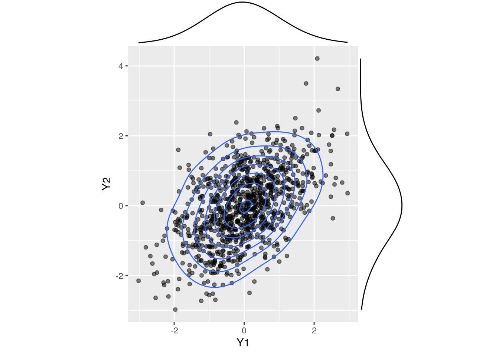
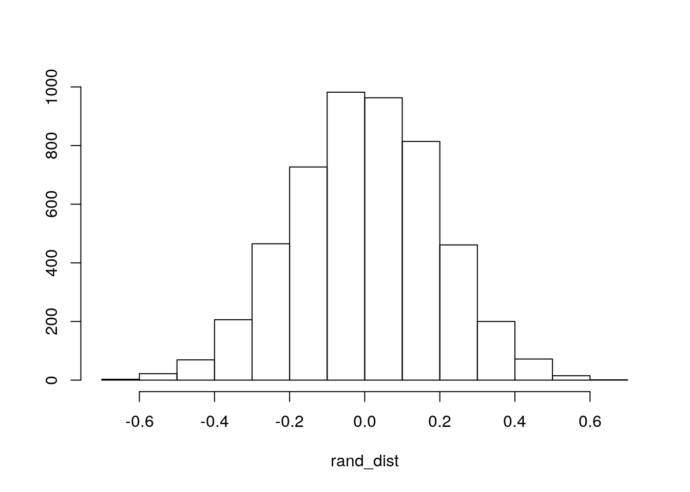

January 1, 0001
Introduction:
My dataset is Water-column environmental variables and accompanying discrete CTD measurements collected offshore the U.S. Mid- and South Atlantic. There are many variables but to name a few, there is SHIP, the name of the boat in which the samples were taken, the SITE, the location of the samples taken, the Depth(m), Temperature(C), Conductivity(mS/cm), Turbidity, Conventional Radiocarbon Age, Salinity, and the dissolved Inorganic concentrations of Phoshpate/Silicate/Nitrate/Nitrite/Ammonia. There were thousands of observations in the original dataset but after manipulating the data, I uploaded 45 observations for each variable into R.
MANOVA Testing:
waterdata <- read.csv("Project 2 data?.csv",
header = TRUE,
quote="\"",
stringsAsFactors= TRUE,
strip.white = TRUE)
library(mvtnorm)
library(ggExtra)
library(tidyverse)## ── Attaching packages ────────────────────────────────── tidyverse 1.3.0.9000 ──## ✓ ggplot2 3.3.3 ✓ purrr 0.3.4
## ✓ tibble 3.1.0 ✓ dplyr 1.0.5
## ✓ tidyr 1.1.3 ✓ stringr 1.4.0
## ✓ readr 1.4.0 ✓ forcats 0.5.1## ── Conflicts ────────────────────────────────────────── tidyverse_conflicts() ──
## x dplyr::filter() masks stats::filter()
## x dplyr::lag() masks stats::lag()library(dplyr)
waterdf <- rmvnorm(1000,mean=c(0,0),sigma=matrix(c(1,.5,.5,1),ncol=2,byrow=T))
water_waterdf <-data.frame(waterdf)%>%rename(Y1=X1,Y2=X2)
p <- ggplot(water_waterdf, aes(Y1,Y2))+geom_point(alpha=.5)+geom_density_2d(h=2)+coord_fixed()
ggMarginal(p,type="density",xparams = list(bw=.5), yparams=list(bw=.5))
library(rstatix)##
## Attaching package: 'rstatix'## The following object is masked from 'package:stats':
##
## filtergroup <- waterdata$Site
DVs <- waterdata %>% select(Conductivity, Turbidity, Salinity)
sapply(split(DVs,group), mshapiro_test)## Blake Escaprment Stetson Banks Stetson Banks II Stetson Deep
## statistic 0.6096572 0.884766 0.808512 0.8529688
## p.value 0.0001292705 0.1009022 0.01839434 0.0399536lapply(split(DVs,group), cov)## $`Blake Escaprment`
## Conductivity Turbidity Salinity
## Conductivity 94.06690228 5.587435e-02 6.030518639
## Turbidity 0.05587435 9.399114e-05 0.001819264
## Salinity 6.03051864 1.819264e-03 0.539724574
##
## $`Stetson Banks`
## Conductivity Turbidity Salinity
## Conductivity 94.90693372 4.215593e-02 5.743640796
## Turbidity 0.04215593 3.352083e-05 0.002425285
## Salinity 5.74364080 2.425285e-03 0.393068651
##
## $`Stetson Banks II`
## Conductivity Turbidity Salinity
## Conductivity 93.45488289 2.578173e-02 5.517457774
## Turbidity 0.02578173 7.533789e-05 0.001360965
## Salinity 5.51745777 1.360965e-03 0.397202767
##
## $`Stetson Deep`
## Conductivity Turbidity Salinity
## Conductivity 80.92990731 0.0764086748 4.402735923
## Turbidity 0.07640867 0.0001804115 0.001648196
## Salinity 4.40273592 0.0016481964 0.372871009man1<-manova(cbind(Turbidity, Conductivity)~Site, data=waterdata)
summary(man1)## Df Pillai approx F num Df den Df Pr(>F)
## Site 3 0.58634 5.8067 6 84 4.265e-05 ***
## Residuals 42
## ---
## Signif. codes: 0 '***' 0.001 '**' 0.01 '*' 0.05 '.' 0.1 ' ' 1summary.aov(man1)## Response Turbidity :
## Df Sum Sq Mean Sq F value Pr(>F)
## Site 3 0.0038318 0.00127726 13.196 3.299e-06 ***
## Residuals 42 0.0040652 0.00009679
## ---
## Signif. codes: 0 '***' 0.001 '**' 0.01 '*' 0.05 '.' 0.1 ' ' 1
##
## Response Conductivity :
## Df Sum Sq Mean Sq F value Pr(>F)
## Site 3 143 47.658 0.5254 0.6673
## Residuals 42 3810 90.715waterdata%>%group_by(Site)%>%summarize(mean(Conductivity),mean(Turbidity))## # A tibble: 4 x 3
## Site `mean(Conductivity)` `mean(Turbidity)`
## <fct> <dbl> <dbl>
## 1 Blake Escaprment 44.5 0.123
## 2 Stetson Banks 45.0 0.142
## 3 Stetson Banks II 46.5 0.147
## 4 Stetson Deep 48.9 0.139pairwise.t.test(waterdata$Conductivity, waterdata$Site, p.adj="none")##
## Pairwise comparisons using t tests with pooled SD
##
## data: waterdata$Conductivity and waterdata$Site
##
## Blake Escaprment Stetson Banks Stetson Banks II
## Stetson Banks 0.89 - -
## Stetson Banks II 0.63 0.72 -
## Stetson Deep 0.26 0.32 0.55
##
## P value adjustment method: nonepairwise.t.test(waterdata$Turbidity,waterdata$Site, p.adj="none")##
## Pairwise comparisons using t tests with pooled SD
##
## data: waterdata$Turbidity and waterdata$Site
##
## Blake Escaprment Stetson Banks Stetson Banks II
## Stetson Banks 2.3e-05 - -
## Stetson Banks II 6.5e-07 0.19652 -
## Stetson Deep 0.00028 0.42890 0.04425
##
## P value adjustment method: none1 Manova, 2 Anova, 12, t tests were ran, 15 tests total. alpha = 0.05/12 = 0.00416
A one-way MANOVA was conducted to determine the effect of the site where the water sample was taken (Stetson Deep, Blake Escaprment,
Stetson Banks, and Stetson Banks II) on two dependent variables (Conductivity and Turbidity).
Examination of bivariate density plots for each group revealed no stark deparures from
multivariate normality. Examination of covariance matrices for each group revealed
relative homogeneity. No univariate or multivariate outliers were evident and MANOVA
was considered to be an appropriate analysis technique.
Significant differences were found among the three water sites for at least one of the dependent variables, Pillai trace = 0.59, pseudo F(6, 84) = 5.8067, p < 0.0001.
Univariate ANOVAs for each dependent variable were conducted as follow-up tests to the MANOVA, using the Bonferroni method for controlling Type I error rates for multiple comparisons. The univariate ANOVAs for Turbidity was also significant, F(3,42) = 13.196, p < 0.0001. The univariate ANOVAs for Conductivity turned out to not be significant, F(3,42) = 0.5254, p > 0.05.
Post hoc analysis was performed conducting pairwise comparisons to determine which water site differed in conductivity and turbidity. All three Sites were found to differ significantly from each other in terms of Turbidity after adjusting for multiple comparisons (bonferroni α = .05/12 = 0.00416). However, after adjusting for multiple comparisons (bonferroni α = .05/12 = 0.00416), the three sites were found to not differ significantly from each other in terms of conductivity.
Randomization Testing:
Not_Modern <- c(1.32,1.58,1.37,1.14,1.23,1.22,1.34,1.35,1.26,1.73,1.86,1.38,1.83,0.82,1.81,1.15,1.07)
Modern <- c(1.08,0.59,0.23,0.14,0.11,0.03,0.04,0.02,0.03,0.46,0.34,0.13,0.11,0.03,0.03,0.03,0.86,0.89,0.58,0.16,0.06,0.03,0.04,1.42,0.8,0.18,0.03,0.04,0.04)
crit <- data.frame(condition=c(rep("Modern",29),rep("Not Modern",17)), concentration=c(Modern,Not_Modern))
ggplot(crit,aes(concentration,fill=condition))+geom_histogram(bins=6.5)+
facet_wrap(~condition,ncol=2)+theme(legend.position="none")crit%>%group_by(condition)%>%
summarize(means=mean(concentration))%>%summarize(`mean_diff`=diff(means))## # A tibble: 1 x 1
## mean_diff
## <dbl>
## 1 1.09head(perm<-data.frame(condition=crit$condition,concentration=sample(crit$concentration)))## condition concentration
## 1 Modern 0.58
## 2 Modern 1.86
## 3 Modern 1.35
## 4 Modern 1.32
## 5 Modern 1.34
## 6 Modern 0.03perm%>%group_by(condition)%>%
summarize(means=mean(concentration))%>%summarize(`mean_diff:`=diff(means))## # A tibble: 1 x 1
## `mean_diff:`
## <dbl>
## 1 -0.203perm<-data.frame(condition=crit$condition,concentration=sample(crit$concentration))
rand_dist <- vector()
for(i in 1:5000){
new <-data.frame(concentration=sample(crit$concentration),condition=crit$condition)
rand_dist[i]<-mean(new[new$condition=="Modern",]$concentration)-
mean(new[new$condition=="Not Modern",]$concentration)}
{hist(rand_dist,main="",ylab=""); abline(v = c(-1.085, 1.085),col="red")}
mean(rand_dist > 1.085 | rand_dist < -1.085)## [1] 0t.test(data=crit, concentration~condition)##
## Welch Two Sample t-test
##
## data: concentration by condition
## t = -10.85, df = 40.612, p-value = 1.434e-13
## alternative hypothesis: true difference in means is not equal to 0
## 95 percent confidence interval:
## -1.2880360 -0.8836881
## sample estimates:
## mean in group Modern mean in group Not Modern
## 0.2941379 1.3800000Conventional Radiocarbon Age was calculated using the radiocarbon decay equation (Stuiver and Polach, 1977). A value of 1 indicates the sample age after 1950 or modern. A value of 0 indicates the sample age is from before 1950 or NOT modern. I used a randomization test to see if there is a difference in dissolved inorganic phosphate concentrations between samples that are modern, and samples that are not modern. Null hypothesis: mean dissolved inorganic phosphate concentration is the same for modern vs. not modern samples. Alternative hypothesis: mean dissolved inorganic phosphate concentration is not the same for modern vs not modern samples. After obtaining a p-value of 0.00 and comparing it to our alpha level of 0.05, we have sufficient data to reject the null hypothesis. This shows that the mean dissolved inorganic phosphate concentration is virtually NOT the same across modern and not modern samples.
Linear Regression:
library(tidyverse)
library(sandwich)
library(lmtest)## Loading required package: zoo##
## Attaching package: 'zoo'## The following objects are masked from 'package:base':
##
## as.Date, as.Date.numericfit<-lm(Silicate ~ Conventional.Radiocarbon.Age + Nitrate..Nitrite, data=waterdata)
summary(fit)##
## Call:
## lm(formula = Silicate ~ Conventional.Radiocarbon.Age + Nitrate..Nitrite,
## data = waterdata)
##
## Residuals:
## Min 1Q Median 3Q Max
## -1.54954 -0.31774 0.07182 0.28898 1.74722
##
## Coefficients:
## Estimate Std. Error t value Pr(>|t|)
## (Intercept) 3.84634 0.40198 9.568 3.24e-12 ***
## Conventional.Radiocarbon.Age -3.33090 0.35864 -9.288 7.74e-12 ***
## Nitrate..Nitrite 0.41343 0.01802 22.945 < 2e-16 ***
## ---
## Signif. codes: 0 '***' 0.001 '**' 0.01 '*' 0.05 '.' 0.1 ' ' 1
##
## Residual standard error: 0.711 on 43 degrees of freedom
## Multiple R-squared: 0.9837, Adjusted R-squared: 0.9829
## F-statistic: 1298 on 2 and 43 DF, p-value: < 2.2e-16coef(fit)## (Intercept) Conventional.Radiocarbon.Age
## 3.8463421 -3.3309012
## Nitrate..Nitrite
## 0.4134331waterdata %>% ggplot(aes(Nitrate..Nitrite, Silicate))+geom_point()+geom_smooth(method = 'lm',se=F)## `geom_smooth()` using formula 'y ~ x'
resids<-fit$residuals
fitvals<-fit$fitted.values
ggplot()+geom_point(aes(fitvals,resids))+geom_hline(yintercept=0, color='red')ggplot()+geom_histogram(aes(resids))## `stat_bin()` using `bins = 30`. Pick better value with `binwidth`.
ggplot()+geom_qq(aes(sample=resids))+geom_qq()summary(fit)$coef[,1:2]## Estimate Std. Error
## (Intercept) 3.8463421 0.40198397
## Conventional.Radiocarbon.Age -3.3309012 0.35863810
## Nitrate..Nitrite 0.4134331 0.01801828coeftest(fit, vcov = vcovHC(fit))[,1:2]## Estimate Std. Error
## (Intercept) 3.8463421 0.51301282
## Conventional.Radiocarbon.Age -3.3309012 0.49666059
## Nitrate..Nitrite 0.4134331 0.02612267Is there a difference in Dissolved inorganic silicate concentration for Modern vs. Not modern samples, (A value of 1 indicates the sample age after 1950 or modern. A value of 0 indicates the sample age is from before 1950 or NOT modern) controlling for dissolved inorganic nitrate and nitrite concentration. H0: Controlling for dissolved inorganic nitrate and nitrite concentration, Age status does not explain variation in inorganic silicate concentration. H0: Controlling for Age status, dissolved inorganic nitrate and nitrite concentration does not explain variation in inorganic silicate concentration. The equation predicting silicate concentration is: Silicate = 3.85 - 0.09(Age) + 0.41(Nitrate/Nitrite). These values were given from the estimate coefficients. Controlling Age status, there is a significant effect of Nitrate/Nitrite on Silicate concentration. For every one unit increase in Nitrate/Nitrite concentration, Silicate concentration increases 0.41 mMole/Liter. The Multiple R-squared value is 0.9837, this says that by taking into account Nitrate/Nitrite concentration and the age of the sample, 98% of silicate proportion will be explained. According to the plots, the data meets the assumptions of linearity, normality, and homoskedasticity. Computing regression results with robust standard errors, I obtained larger standard errors in each category, this shows that if I were to compute a test statistic, the value will be smaller, with a larger p-value, making it less likely to reject the null hypothesis.
Regression w/Bootstrapping:
fit<-lm(Silicate ~ Conventional.Radiocarbon.Age + Nitrate..Nitrite, data=waterdata)
resids<-fit$residuals
fitvals<-fit$fitted.values
samp_distn<-replicate(5000, {
boot_dat <- sample_frac(waterdata, replace=T)
fit <- lm(Silicate ~ Nitrate..Nitrite + Conventional.Radiocarbon.Age, data=boot_dat)
coef(fit)
})
samp_distn %>% t %>% as.data.frame %>% summarize_all(sd)## (Intercept) Nitrate..Nitrite Conventional.Radiocarbon.Age
## 1 0.4410819 0.02245223 0.430106samp_distn %>% t %>% as.data.frame %>% pivot_longer(1:3) %>% group_by(name) %>%
summarize(lower = quantile(value, 0.025), upper = quantile(value, 0.975))## # A tibble: 3 x 3
## name lower upper
## <chr> <dbl> <dbl>
## 1 (Intercept) 3.07 4.76
## 2 Conventional.Radiocarbon.Age -4.21 -2.56
## 3 Nitrate..Nitrite 0.365 0.451The standard error given from the bootstrap is the highest compared to the original and robust standard error values. The p-value for the bootstrap is also larger than the original SE p-value and robust SE p-value.
Logistic Regression Model:
library(tidyverse)
library(lmtest)
library(plotROC)
library(ggplot2)
fit1 <- glm(Conventional.Radiocarbon.Age ~ Depth, data = waterdata, family = "binomial")
coeftest(fit1)##
## z test of coefficients:
##
## Estimate Std. Error z value Pr(>|z|)
## (Intercept) 3.8779915 1.0951092 3.5412 0.0003983 ***
## Depth -0.0090501 0.0027264 -3.3194 0.0009022 ***
## ---
## Signif. codes: 0 '***' 0.001 '**' 0.01 '*' 0.05 '.' 0.1 ' ' 1coef(fit1)%>%round(5)%>%data.frame## .
## (Intercept) 3.87799
## Depth -0.00905coef(fit1)%>%exp%>%round(5)%>%data.frame## .
## (Intercept) 48.32705
## Depth 0.99099probs<-predict(fit1,type="response")
table(truth=waterdata$Conventional.Radiocarbon.Age, prediction=probs>0.5) %>% addmargins## prediction
## truth FALSE TRUE Sum
## 0 12 5 17
## 1 3 26 29
## Sum 15 31 46#accuracy
(12+26)/46## [1] 0.826087#sensitivity
(26/31)## [1] 0.8387097#specificity
(12/17)## [1] 0.7058824#precision
(26/29)## [1] 0.8965517waterdata$prob <- predict(fit1,type="response")
waterdata$predicted <- ifelse(waterdata$prob>.5,"1","0")
logistic <- function(x){exp(x)/(1+exp(x))}
waterdata$logit<-predict(fit1)
waterdata$outcome<-factor(waterdata$Conventional.Radiocarbon.Age,levels=c("1","0"))
ggplot(waterdata,aes(logit, fill=outcome))+geom_density(alpha=.3)+
geom_vline(xintercept=0,lty=2)+xlab("logit (log-odds)")+
geom_rug(aes(logit,color=outcome))TPR <- (26/31)
FPR <- 1-(12/17)
ROCplot<-ggplot(waterdata)+geom_roc(aes(d=Conventional.Radiocarbon.Age,m=prob), n.cuts=0)
ROCplotcalc_auc(ROCplot)## PANEL group AUC
## 1 1 -1 0.9300203Logistic regression predicting Age of sample from depth. log(odds)=3.877-0.009(Depth) or odds =48.32705 * 0.99^Depth. This can be interpreted by saying going up 1 depth multiplies the odds by a factor of e^-0.009 = 0.99. According to the confusion matrix, 82% accuracy, which is the proportion of correctly classified samples. 83% sensitivity, proportion of Modern age samples correctly classified. 70% specificity, the proportion of NOT modern age samples correctly classified. 89% precision, the proportion classified as Modern who actually are. I found an AUC value of 0.93, this is the probability that a randomly selected sample that is modern has a higher predicted probability than a randomly selected sample that is not modern. 1 is Modern and 0 is Not Modern.
Logistic Regression Model (part2):
library(glmnet)## Loading required package: Matrix##
## Attaching package: 'Matrix'## The following objects are masked from 'package:tidyr':
##
## expand, pack, unpack## Loaded glmnet 4.0-2fit2<-glm(Conventional.Radiocarbon.Age ~ Turbidity+ Sbeox0 + Silicate + Ammonia, data= waterdata, family="binomial")
coeftest(fit2)##
## z test of coefficients:
##
## Estimate Std. Error z value Pr(>|z|)
## (Intercept) 53.38152 34.42451 1.5507 0.12098
## Turbidity -255.17436 185.15957 -1.3781 0.16816
## Sbeox0 -1.14778 1.06612 -1.0766 0.28166
## Silicate -1.47812 0.71152 -2.0774 0.03777 *
## Ammonia -7.67869 9.30534 -0.8252 0.40926
## ---
## Signif. codes: 0 '***' 0.001 '**' 0.01 '*' 0.05 '.' 0.1 ' ' 1coef(fit2)%>%round(5)%>%data.frame## .
## (Intercept) 53.38152
## Turbidity -255.17436
## Sbeox0 -1.14778
## Silicate -1.47812
## Ammonia -7.67869coef(fit2)%>%exp%>%round(5)%>%data.frame## .
## (Intercept) 1.525107e+23
## Turbidity 0.000000e+00
## Sbeox0 3.173400e-01
## Silicate 2.280700e-01
## Ammonia 4.600000e-04probs2<-predict(fit2,type="response")
table(predict=as.numeric(probs2>.5),truth=waterdata$Conventional.Radiocarbon.Age)%>%addmargins## truth
## predict 0 1 Sum
## 0 16 1 17
## 1 1 28 29
## Sum 17 29 46#accuracy
(12+28)/46## [1] 0.8695652#sensitivity
(28/39)## [1] 0.7179487#specificity
(16/17)## [1] 0.9411765#precision
(28/29)## [1] 0.9655172TPR2 <- (28/39)
FPR2 <- 1-(16/17)
ROCplot2<-ggplot(waterdata)+geom_roc(aes(d=Conventional.Radiocarbon.Age,m=probs2), n.cuts=0)
ROCplot2calc_auc(ROCplot2)## PANEL group AUC
## 1 1 -1 0.9959432class_diag <- function(probs,truth){
if(is.character(truth)==TRUE) truth<-as.factor(truth)
if(is.numeric(truth)==FALSE & is.logical(truth)==FALSE) truth<-as.numeric(truth)-1
tab<-table(factor(probs>.5,levels=c("FALSE","TRUE")),factor(truth, levels=c(0,1)))
acc=sum(diag(tab))/sum(tab)
sens=tab[2,2]/colSums(tab)[2]
spec=tab[1,1]/colSums(tab)[1]
ppv=tab[2,2]/rowSums(tab)[2]
ord<-order(probs2, decreasing=TRUE)
probs3 <- probs2[ord]; truth <- truth[ord]
TPR=cumsum(truth)/max(1,sum(truth))
FPR=cumsum(!truth)/max(1,sum(!truth))
dup <-c(probs3[-1]>=probs3[-length(probs)], FALSE)
TPR <-c(0,TPR[!dup],1); FPR<-c(0,FPR[!dup],1)
n <- length(TPR)
auc <- sum( ((TPR[-1]+TPR[-n])/2) * (FPR[-1]-FPR[-n]) )
data.frame(acc,sens,spec,ppv,auc)
}
class_diag(probs2,waterdata$Conventional.Radiocarbon.Age)## acc sens spec ppv auc
## 1 0.9565217 0.9655172 0.9411765 0.9655172 0.9959432set.seed(1234)
k=10
data1<-waterdata[sample(nrow(waterdata)),]
folds<-cut(seq(1:nrow(waterdata)),breaks=k,labels=F)
diags<-NULL
for(i in 1:k){
train<-data1[folds!=i,]
test<-data1[folds==i,]
truth<-test$Conventional.Radiocarbon.Age
fit<-glm(Conventional.Radiocarbon.Age ~ Turbidity+ Silicate + Sbeox0 + Ammonia, data= train, family="binomial")
probs<-predict(fit,newdata = test,type="response")
diags<-rbind(diags,class_diag(probs,truth))
}## Warning: glm.fit: algorithm did not converge## Warning: glm.fit: fitted probabilities numerically 0 or 1 occurred## Warning: glm.fit: algorithm did not converge## Warning: glm.fit: fitted probabilities numerically 0 or 1 occurredsummarize_all(diags,mean)## acc sens spec ppv auc
## 1 0.94 0.95 NaN 0.9416667 NA#LASSO
y<-as.matrix(waterdata$Conventional.Radiocarbon.Age)
x<-model.matrix(Conventional.Radiocarbon.Age~ Turbidity + Silicate + Ammonia, data= waterdata)[,-1]
head(x)## Turbidity Silicate Ammonia
## 1 0.1366 12.16 0.07
## 2 0.1403 12.44 0.26
## 3 0.1299 11.56 0.09
## 4 0.1265 8.07 0.19
## 5 0.1193 3.69 0.73
## 6 0.1230 1.35 0.00cv <- cv.glmnet(x,y)
cv<-cv.glmnet(x,y,family="binomial")
lasso<-glmnet(x,y,family="binomial",lambda=cv$lambda.1se)
coef(lasso)## 4 x 1 sparse Matrix of class "dgCMatrix"
## s0
## (Intercept) 3.0466694
## Turbidity .
## Silicate -0.3665713
## Ammonia .set.seed(1234)
k=10
data2 <- waterdata %>% sample_frac #put rows of dataset in random order
folds <- ntile(1:nrow(data2),n=10) #create fold labels
diags<-NULL
for(i in 1:k){
train <- data2[folds!=i,]
test <- data2[folds==i,]
truth <- test$Conventional.Radiocarbon.Age
fit <- glm(Conventional.Radiocarbon.Age~Silicate,
data=train, family="binomial")
probs <- predict(fit, newdata=test, type="response")
diags<-rbind(diags,class_diag(probs,truth))
}
diags%>%summarize_all(mean)## acc sens spec ppv auc
## 1 0.94 0.925 NaN 0.9666667 NAI tried to use the rest of my variables but R kept saying using them all together predicted Conventional Radiocarbon Age too accurately, leaving me Turbidity, Sbeox0, Silicate, and Ammonia. Odds = 1.525107e+23 * 0.0^Turb * 3.173400e-01^Sbeox * 2.280700e-01^Silicate * 4.600000e-04^Ammonia. This shows that going up 1 Sbeox0 multiplies odds by a factor of e^-1.14778 = 3.173400e-01. Going up 1 Silicate multiplies odds by a factor of e^-1.47812 = 2.280700e-01. Going up 1 Ammonia multiplies odds by a factor of e^-7.67869 = 4.600000e-04. According to the confusion matrix, 86% accuracy, which is the proportion of correctly classified samples. 71% sensitivity, proportion of Modern age samples correctly classified. 94% specificity, the proportion of NOT modern age samples correctly classified. 96% precision, the proportion classified as Modern who actually are. I found an AUC value of 0.995, this is the probability that a randomly selected sample that is modern has a higher predicted probability than a randomly selected sample that is not modern. An AUC was not given from the 10-fold CV, the classification diagnostics were similar. According to LASSO, silicate is the best predictive variable. An AUC was not given from the 10-fold CV LASSO.